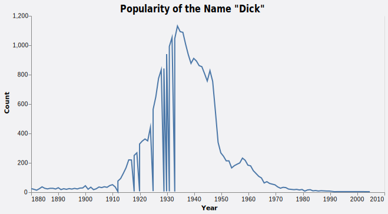
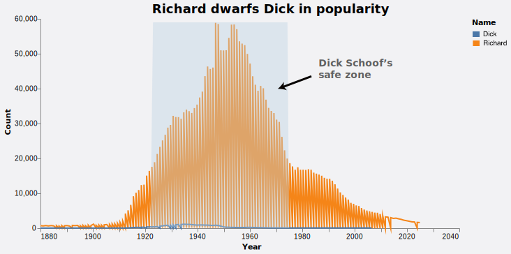

The rise and fall of the name "Dick"
Will Dick Schoof, the new prime minister of The Netherlands, be taken seriously in the United States?
Will Dick Schoof, the new prime minister of The Netherlands, be taken seriously in the United States?
Dutch, the language spoken in my home country The Netherlands, is often the butt of jokes. People have told me it sounds like 'drunk English,' 'weird German' or similar to the language used in the popular computer game Sims.
Beyond the sound of it, there is another reason why Dutch is funny: unfortunate and unintended translations into English. One of our former prime ministers was called Wim Kok (the surname pronounced identitically to cock). Since two weeks, we have a new prime minister: Dick Schoof. In Dutch, neither Kok nor Dick have anything to do with the male reproductory organ: Kok is the Dutch word for cook, for example.
Due to this awkward translation, I was curious to find out if prime minister Dick Schoof is likely to be met with suppressed giggles on his official visits to the United States. Therefore, I looked at how (un)common his name is in America, using the Baby Names Database of the Social Security Administration (SSA).
From commonplace to laughing stock?
At a certain point in time, Dick was a relatively popular name in the United States. At its peak, in 1934, there were 1131 babies born that year who were named Dick. In the second half of the century, the name saw a steady decline.
In 2023, there were 0 new Dicks brought to life in the U.S. The now strong association of the name Dick with the penis is most likely to blame. Consequently, boys who were named Dick when that connotation wasn't there yet, grew to be men in a world where their name became a joke.
Richard to the Rescue
Even though on paper, Dick Schoof is no longer likely to find many namesakes in the United States, there is a group of people who can help him out: the Richards.
Some context for the non-Americans: Dick is a nickname often used for people called Richard. While perhaps Rich or Rick would've been more logical, the origin is alleged to lie in the English rhyming slang of the Middle Ages. Thus, Richards can come to the rescue of the Dicks.
In conclusion, as long as on his political visits to the U.S. Dick Schoof interacts with people born between 1920 and the 1970s, the hightide days of Richards and Dicks alike, he should not be received with too many giggles.
Luckily, both presidential candidate Trump and President Biden are old enough to know many real Dicks as well as Richard Dicks. Hopefully for Schoof, that means they won't chuckle at his name.